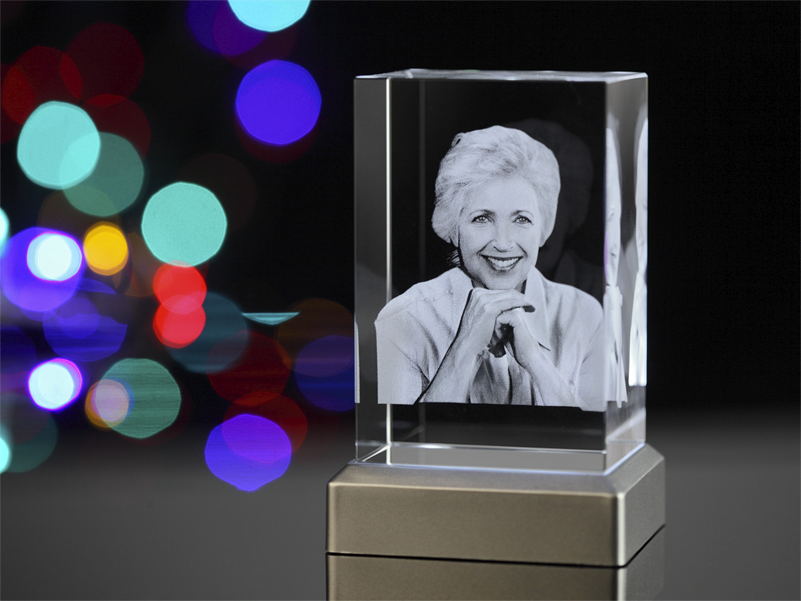

Specyfikacja produktu

Najlepszy efekt uzyskuje się na ciemnych pomnikach z
uwagi na fakt, że sama bryła kryształu jest przezroczysta, a dodatkowo fotografia stworzona
z białych mikropęknięć - co powoduje, że przy dużym natężeniu światła obraz może wydawać się
mało widoczny.

Efekt wodzenia wzrokiem. Fotografia wewnątrz
kryształu podąża za osobą przechodzącą obok pomnika.
Możliwość dodania dowolnego tekstu.

Zdjęcie wygrawerowane wewnątrz bryły. Tak jak
wszystkie nasze produkty, jest odporny na warunki atmosferyczne.